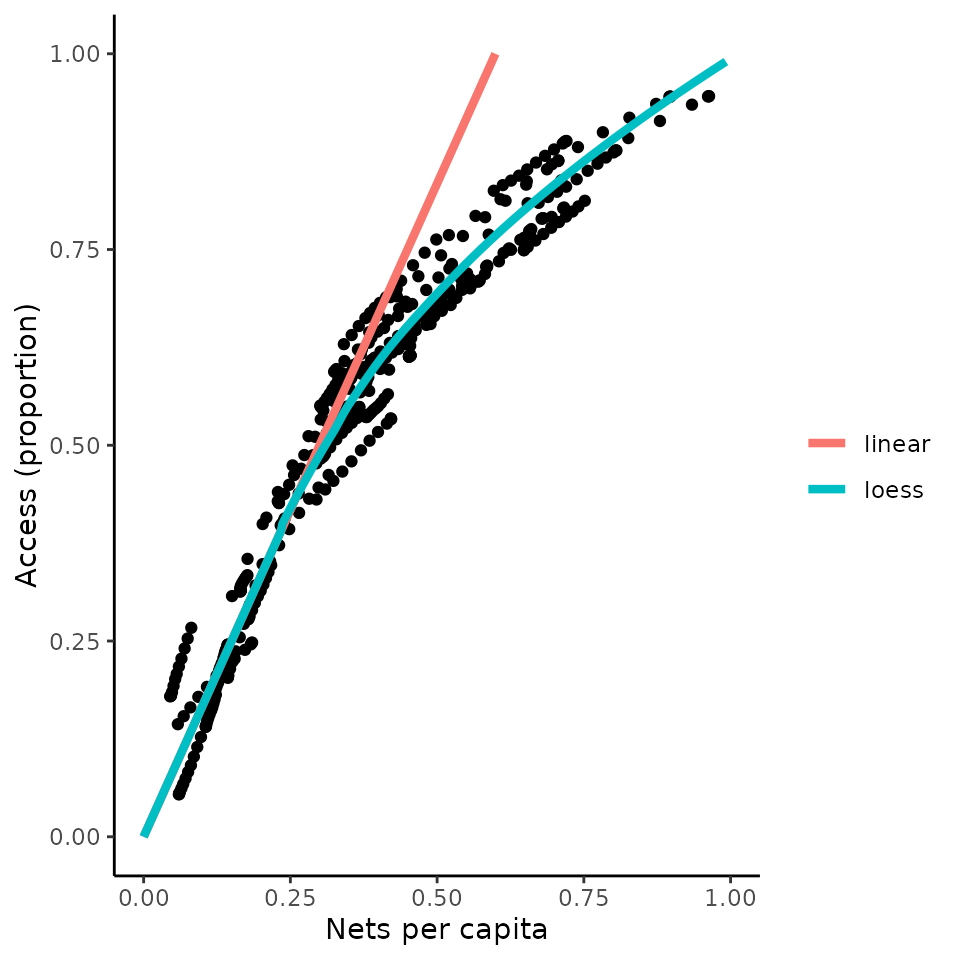
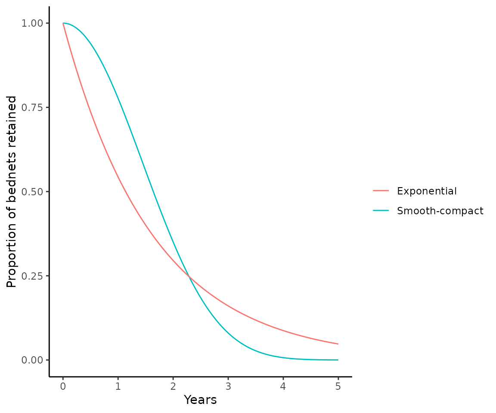

Converting between bed net metrics
Metrics.RmdThere are many different metrics associated with measuring bed net “coverage”.
These metrics are summarised in an excellent paper by Amelia Bertozzi-Villa and collegues:
Bertozzi-Villa, Amelia, et al. Nature communications 12.1 (2021): 1-12, please check it out and make sure to cite appropriately if you use this package.
We define them here as:
Usage: The proportion of the population with a net who slept under it.
Access: The proportion of the population who live in a household where they could sleep under a bed net.
Crop: The number of nets in the population. Always expressed as nets per capita.
Distribution: The number of nets distributed. Always expressed as nets per capita.
Being able to convert between these metrics is useful for a number of reasons:
- If you have data for one, but need information for another
- If a specific metric is requested as an output
- If you are trying to align with estimates that use the same underlying model
- If your work requires costing of bed net distributions
Conversion steps
The conversion from net usage to annual nets distributed per capita occurs in the following steps:
Usage ⬅️➡️ Access
Convert between net usage and net access using either an estimated
country-specific
or a user-specified use rate. By definition, net use rate = net
usage/net access.
Access ⬅️➡️ Crop
Convert between net access and net crop using either a linear-relationship based on the number of people that can use one net, or a Loess curve fitted to the observed relationship between these two metrics across sub-Saharan Africa.
Crop ⬅️➡️ Distribution
Convert between net crop and net distributions accounting for net distribution timing and net loss over time.
Conversion example
We can demonstrate an example of a simple conversion of this kind
# Create some example data for net usage in Nigeria over 4 years
iso3c <- "NGA"
years <- 2000:2003
usage <- c(0.1, 0.2, 0.6, 0.5)
output <-
data.frame(
year = years,
iso3c = iso3c,
usage = usage
)
# Access the estimates of usage rate and net-retention half life for Nigeria
usage_rate <- get_usage_rate(iso3c)
half_life <- get_halflife(iso3c)
# Use the nets functionality to convert usage ➡️ acesss ➡️ crop ➡️ distribution
output$access <- usage_to_access(
usage = output$usage,
use_rate = usage_rate
)
output$crop <- access_to_crop(
access = output$access,
type = "loess"
)
output$distribution <- crop_to_distribution(
crop = output$crop,
crop_timesteps = (output$year + 0.5) * 365,
distribution_timesteps = (output$year) * 365,
half_life = half_life
)
output
#> year iso3c usage access crop distribution
#> 1 2000 NGA 0.1 0.1136881 0.06813548 0.07048166
#> 2 2001 NGA 0.2 0.2273763 0.13627097 0.08748988
#> 3 2002 NGA 0.6 0.6821289 0.48564537 0.40593797
#> 4 2003 NGA 0.5 0.5684407 0.36434064 0.01972797And, if we want we can make the same conversions in the opposite direction
output <- output[, c("year", "iso3c", "distribution")]
# Use the nets functionality to convert distribution ➡️ crop ➡️ access ➡️ usage
output$crop <- distribution_to_crop(
distribution = output$distribution,
distribution_timesteps = (output$year) * 365,
crop_timesteps = (output$year + 0.5) * 365,
half_life = half_life
)
output$access <- crop_to_access(
crop = output$crop,
type = "loess"
)
output$usage <- access_to_usage(
access = output$access,
use_rate = usage_rate
)
# We retrieve our original input usage:
round(output$usage, 2)
#> [1] 0.1 0.2 0.6 0.5The relationship between access and crop
The relationship between access and crop is derived from monthly data
for the latest available year (2020) across African countries, and
plotted below (corresponding to Figure 4 in the paper by
Bertozzi-Villa et al). There are two options in the
access_to_crop() function one “loess” a loess smooth of the
data extrapolated to allow prediction for access values outside of the
observed range and a second, “linear”, which assumed a fixed number of
people can use each net. The linear model is very simple and does not
fit the observed data well, so use with caution, although it is often
the way bed nets are costed.
library(ggplot2)
access <- seq(0, 1, 0.01)
crop_loess <- access_to_crop(access, type = "loess")
crop_linear <- access_to_crop(access, type = "linear")
model_data <- data.frame(access = rep(access, 2),
model = rep(c("loess", "linear"), each = length(crop_loess)),
crop = c(crop_loess, crop_linear))
# Plot curve
ggplot() +
geom_point(
data = crop_data,
aes(x = percapita_nets_mean, y = access_mean),
col = "black"
) +
geom_line(
data = model_data,
aes(x = crop, y = access, colour = model),
size = 1.5
) +
xlim(0, 1) +
ylim(0, 1) +
labs(x = "Nets per capita", y = "Access (proportion)", colour = "") +
theme_classic()
Assumptions about the net loss function
The default option in these metric conversions assumes that nets are lost according to a smooth-compact function (net_loss_function = net_loss_map). This in line with the paper by Bertozzi-Villa et al.
An alternative option is to assume exponential net loss
(net_loss_function = net_loss_exp), which corresponds to
the assumption in malariasimulation.
The proportion of nets retained over time are visualised for both options below, for a 3 year distribution cycle and a net half life of 1.64 years.
t <- seq(0, 5 * 365, 1)
# Calculate proportion of nets retained assuming smooth-compact net loss
nets_retained_map <- net_loss_map(
t = t,
k = 20,
half_life = 1.64 * 365
)
# k is a fixed rate parameter based on which net half lives were estimated in the paper
# Calculate proportion of nets retained assuming exponential net loss
nets_retained_exp <- net_loss_exp(
t = t,
mean_retention = 1.64 * 365
)
# Plot curve
ggplot() +
geom_line(aes(
x = t / 365, y = nets_retained_map,
colour = "Smooth-compact"
)) +
geom_line(aes(
x = t / 365, y = nets_retained_exp,
colour = "Exponential"
)) +
ylim(0, 1) +
labs(x = "Years", y = "Proportion of bednets retained", colour = "") +
theme_classic()